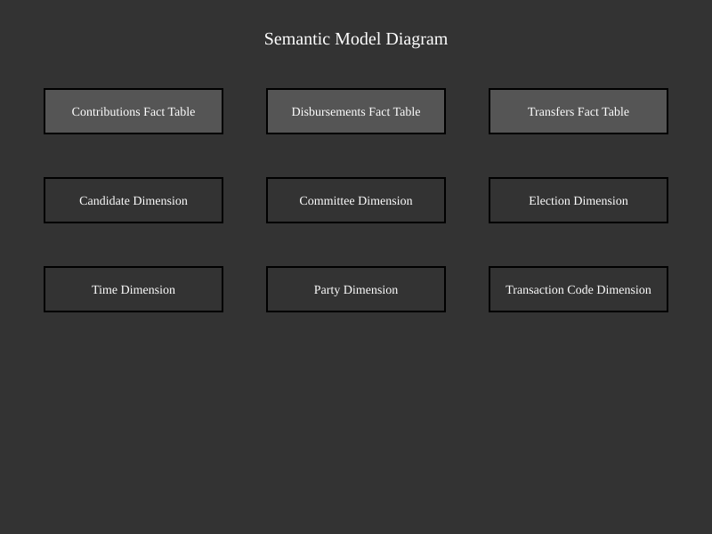

FEC Data Normalization and Semantic Model Notes
This document summarizes current normalization guidance for this repository and a PowerBI-friendly semantic model direction. The goal is to unify the FEC’s disparate naming conventions and data structures into a consistent, readable, and performant model.
1. Snowflake Schema Overview
The snowflake schema is a logical arrangement of tables in a database that supports efficient querying and reporting. It consists of:
- Dimension Tables (Entities): Provide descriptive context for facts.
- Fact Tables: Store measurable events or transactions.
This schema is ideal for PowerBI, enabling clear relationships and optimized performance.
2. Dimension Tables (Entities)
Dimension tables represent entities in the database schema. These tables provide descriptive context for the facts stored in fact tables. Examples include:
- Candidate Dimension: Contains detailed information about candidates, such as name, party affiliation, and state. Loaded from: FEC Candidate Bulk File and described in the Candidate Master File Description.
- Committee Dimension: Includes committee names, types, and associated candidates. Loaded from: FEC Committee Bulk File and described in the Committee Master File Description.
- Election Dimension: Defines election years, types (e.g., general, primary), and associated offices. Derived from: FEC Bulk Data References.
- Time Dimension: Organizes time data based on the FEC’s 2-year election cycle concept, including attributes such as cycle, year, quarter, month, week, and day, to support time-based analysis and reporting. Derived from: FEC Bulk Data References.
- Party Dimension: Includes attributes such as Party Code and Party Name. Derived from: Party Code Descriptions.
- Office Dimension: Includes attributes such as Office Code, Office Name (e.g., Senate, House, President), and State. Derived from: Candidate Master File Description.
- Election Type Dimension: Includes attributes such as Election Type Code and Election Type Name (e.g., General, Primary, Special). Derived from: FEC Bulk Data References.
- Committee Type Dimension: Defines the type of committee (e.g., PAC, Party, Candidate Committee). Attributes include Committee Type Code and Committee Type Name. Derived from: FEC Bulk Data References.
- Committee Designation Dimension: Specifies the designation of committees (e.g., Authorized, Unauthorized, Leadership). Attributes include Designation Code and Designation Name. Derived from: FEC Bulk Data References.
- Filing Frequency Dimension: Represents the filing frequency of committees (e.g., Quarterly, Monthly). Attributes include Filing Frequency Code and Filing Frequency Description. Derived from: FEC Bulk Data References.
- Organization Type Dimension: Defines the type of organization (e.g., Corporation, Labor Organization). Attributes include Organization Type Code and Organization Type Description. Derived from: FEC Bulk Data References.
- Linkage Type Dimension: Represents the type of linkage between candidates and committees. Attributes include Linkage Type Code and Linkage Type Description. Derived from: FEC Bulk Data References.
- Transaction Code Dimension: Includes attributes such as Transaction Type Code, Purpose Code, Line Number, and Memo Code. Derived from: Transaction Type Code Descriptions.
3. Fact Tables
Fact tables represent measurable events or transactions. These tables store the facts (metrics) and link to dimension tables through foreign keys. Examples include:
- Contributions Fact Table: Stores contribution amounts, dates, and links to Candidate, Committee, and Election dimensions.
- Disbursements Fact Table: Combines all disbursement and expenditure data, storing amounts, dates, and links to Candidate, Committee, and Filing dimensions.
- Transfers Fact Table: Tracks fund transfers between committees, including amounts, dates, and links to both source and destination committees.
- Filings Fact Table: Tracks filing events, including filing dates, types, and associated committees. Derived from: FEC filing specifications.
4. Standardized Table Names for Bulk CSV Imports
Bulk files have names like itcont.txt, cn.txt, pas2.txt, etc. These are renamed to meaningful names in the semantic model.
Raw FEC Model and Source Entry Mapping
| Raw Model Name |
Source Entry and Example ZIP (2026) |
cn |
cn.txt in cn26.zip (2026 ZIP) |
cm |
cm.txt in cm26.zip (2026 ZIP) |
ccl |
ccl.txt in ccl26.zip (2026 ZIP) |
indiv |
itcont.txt in indiv26.zip (2026 ZIP) |
oppexp |
oppexp.txt in oppexp26.zip (2026 ZIP) |
oth |
itoth.txt in oth26.zip (2026 ZIP) |
pas2 |
itpas2.txt in pas226.zip (2026 ZIP) |
weball |
weball26.txt in weball26.zip (2026 ZIP) |
These mappings align the current raw model names with the FEC bulk source entries used by the loader.
5. Standardized Column Names Across All Sources
The FEC mixes column naming conventions:
cand_id, candidate_id, CAND_IDcmte_id, committee_id, committeeidtransaction_amt, amount, TRANSACTION_AMTreceipt_date, date, TRANSACTION_DT
Column Naming Rules
- Use
snake_case or camelCase (PowerBI works well with either).
- Use full words, not abbreviations.
- Apply consistent prefixes for foreign keys.
Canonical Column Names
| Canonical Name |
Example Usage |
candidate_id |
Foreign key for candidates |
committee_id |
Foreign key for committees |
transaction_id |
Unique transaction identifier |
transaction_date |
Date of transaction |
transaction_amount |
Amount of transaction |
employer_name |
Contributor’s employer |
occupation |
Contributor’s occupation |
election_cycle |
Election cycle |
report_type |
Type of report filed |
filing_id |
Unique filing identifier |
This makes DAX and Power Query dramatically easier to read.
6. Conclusion
This document provides a practical normalization approach for this repository and downstream BI usage. By standardizing table and column names and keeping mappings explicit, ETL workflows and reporting models are easier to maintain.
Semantic Model Diagram
The following diagram illustrates the semantic model, including fact tables and dimensions, as described in the FEC data normalization process:

For the source and editable version of this diagram, see the Markdown/mermaid source.